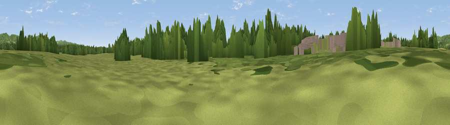

Marlpit Hill
#44261 in England · top 85% of its area beats it · near EdenbridgeThe view, rendered

A 360° render of this exact spot computed from the terrain model, tree cover and land cover — summer colours, afternoon light, calibrated against photographs of famous viewpoints. Real trees, hedges and buildings will differ in detail.
The panorama
Grey silhouette: terrain skyline in each direction (720 bearings, Earth curvature and refraction included). Dashed green: skyline with trees (+15 m) and buildings (+8 m) as obstacles. Blue strip: how far the ground is visible on each bearing.
Where the view opens
Wedge length = distance to the farthest visible ground on that bearing (vegetation-aware). Rings at 10, 25 and 50 km.
What fills the view
46% woodland · 43% grassland · 5% cropland · 5% built-up
Angular shares of the visible panorama (visual magnitude), not map area. Landscape diversity 0.44 (0–1 Shannon).
Key numbers
More beautiful places nearby
The staircase of upgrades: each row has a higher view potential than everything closer. Driving times are estimates from straight-line distance, calibrated against real road routing — check an actual route before setting out.
| Place | Direction | Drive | Score |
|---|---|---|---|
| Viewpoint near Crockham Hill | N · 3 km | ~8 min | 60.2 |
| Viewpoint near French Street | NE · 4 km | ~10 min | 65.8 |
| Viewpoint near Ide Hill | NE · 6 km | ~13 min | 67.9 |
| Viewpoint near Caterham Valley | WNW · 13 km | ~23 min | 68.0 |
| Viewpoint near Shipbourne | ENE · 14 km | ~25 min | 69.1 |
| Box Hill | W · 24 km | ~39 min | 70.4 |
| Viewpoint near Box Hill Village | W · 24 km | ~40 min | 71.0 |
| Viewpoint near Coldharbour | W · 30 km | ~47 min | 71.3 |
51.21172, 0.06439 · source: osm peak · position refined by local search. Computed location — check access rights before visiting.